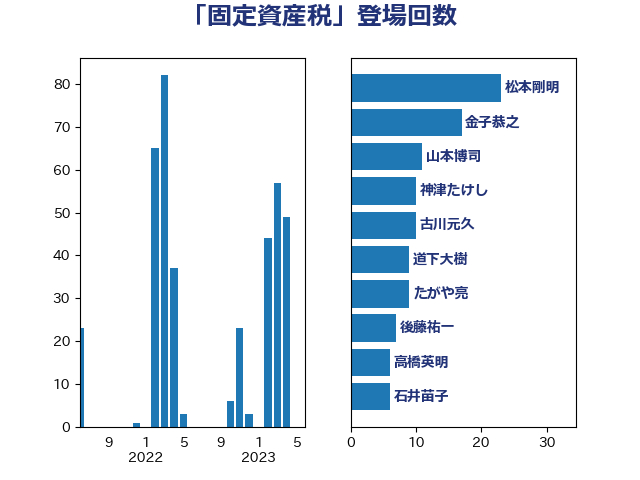

単語「固定資産税」

| 松本剛明 | 自由民主党 | 23 回 |
| 金子恭之 | 自由民主党 | 17 回 |
| 山本博司 | 公明党 | 11 回 |
| 神津たけし | 立憲民主党 | 10 回 |
| 古川元久 | 国民民主党 | 10 回 |
| 道下大樹 | 立憲民主党 | 9 回 |
| たがや亮 | れいわ新選組 | 9 回 |
| 後藤祐一 | 立憲民主党 | 7 回 |
| 高橋英明 | 日本維新の会 | 6 回 |
| 石井苗子 | 日本維新の会 | 6 回 |
| 杉久武 | 公明党 | 6 回 |
| 斉藤鉄夫 | 公明党 | 6 回 |
| 鈴木俊一 | 自由民主党 | 5 回 |
| 輿水恵一 | 公明党 | 5 回 |
| 石井章 | 日本維新の会 | 5 回 |
| 武井俊輔 | 自由民主党 | 5 回 |
| 柳ヶ瀬裕文 | 日本維新の会 | 5 回 |
| 小沢雅仁 | 立憲民主党 | 5 回 |
| おおつき紅葉 | 立憲民主党 | 5 回 |
| 西岡秀子 | 国民民主党 | 4 回 |
| 藤井比早之 | 自由民主党 | 4 回 |
| 石橋通宏 | 立憲民主党 | 4 回 |
| 浜田聡 | NHK党 | 4 回 |
| 柳本顕 | 自由民主党 | 4 回 |
| 岸田文雄 | 自由民主党 | 4 回 |
| 守島正 | 日本維新の会 | 4 回 |
| 芳賀道也 | 国民民主党 | 3 回 |
| 竹詰仁 | 国民民主党 | 3 回 |
| 秋葉賢也 | 自由民主党 | 3 回 |
| 梶山弘志 | 自由民主党 | 3 回 |
| 斎藤アレックス | 国民民主党 | 3 回 |
| 岸真紀子 | 立憲民主党 | 3 回 |
| 岩谷良平 | 日本維新の会 | 3 回 |
| 嘉田由紀子 | 無所属 | 3 回 |
| 中司宏 | 日本維新の会 | 3 回 |
| 鈴木義弘 | 国民民主党 | 2 回 |
| 谷田川元 | 立憲民主党 | 2 回 |
| 西村康稔 | 自由民主党 | 2 回 |
| 若松謙維 | 公明党 | 2 回 |
| 篠原孝 | 立憲民主党 | 2 回 |
| 福田昭夫 | 立憲民主党 | 2 回 |
| 礒崎哲史 | 国民民主党 | 2 回 |
| 白石洋一 | 立憲民主党 | 2 回 |
| 玉木雄一郎 | 国民民主党 | 2 回 |
| 猪瀬直樹 | 日本維新の会 | 2 回 |
| 櫻井周 | 立憲民主党 | 2 回 |
| 柘植芳文 | 自由民主党 | 2 回 |
| 松島みどり | 自由民主党 | 2 回 |
| 末次精一 | 立憲民主党 | 2 回 |
| 岡本あき子 | 立憲民主党 | 2 回 |
| 山本剛正 | 日本維新の会 | 2 回 |
| 尾身朝子 | 自由民主党 | 2 回 |
| 宮本岳志 | 日本共産党 | 2 回 |
| 大塚耕平 | 国民民主党 | 2 回 |
| 伊藤岳 | 日本共産党 | 2 回 |
| 中川康洋 | 公明党 | 2 回 |
| 高橋千鶴子 | 日本共産党 | 1 回 |
| 高木かおり | 日本維新の会 | 1 回 |
| 青木愛 | 立憲民主党 | 1 回 |
| 長友慎治 | 国民民主党 | 1 回 |
| 鈴木庸介 | 立憲民主党 | 1 回 |
| 赤羽一嘉 | 公明党 | 1 回 |
| 豊田俊郎 | 自由民主党 | 1 回 |
| 稲富修二 | 立憲民主党 | 1 回 |
| 石川昭政 | 自由民主党 | 1 回 |
| 田嶋要 | 立憲民主党 | 1 回 |
| 片山大介 | 日本維新の会 | 1 回 |
| 熊谷裕人 | 立憲民主党 | 1 回 |
| 浮島智子 | 公明党 | 1 回 |
| 泉田裕彦 | 自由民主党 | 1 回 |
| 河野義博 | 公明党 | 1 回 |
| 永岡桂子 | 自由民主党 | 1 回 |
| 森田俊和 | 立憲民主党 | 1 回 |
| 星北斗 | 自由民主党 | 1 回 |
| 平木大作 | 公明党 | 1 回 |
| 山谷えり子 | 自由民主党 | 1 回 |
| 山本佐知子 | 自由民主党 | 1 回 |
| 小野泰輔 | 日本維新の会 | 1 回 |
| 大口善徳 | 公明党 | 1 回 |
| 堀場幸子 | 日本維新の会 | 1 回 |
| 城井崇 | 立憲民主党 | 1 回 |
| 和田政宗 | 自由民主党 | 1 回 |
| 吉川沙織 | 立憲民主党 | 1 回 |
| 吉川元 | 立憲民主党 | 1 回 |
| 古賀之士 | 立憲民主党 | 1 回 |
| 務台俊介 | 自由民主党 | 1 回 |
| 前川清成 | 日本維新の会 | 1 回 |
| 住吉寛紀 | 日本維新の会 | 1 回 |
| 仁木博文 | 無所属 | 1 回 |
| 中川貴元 | 自由民主党 | 1 回 |